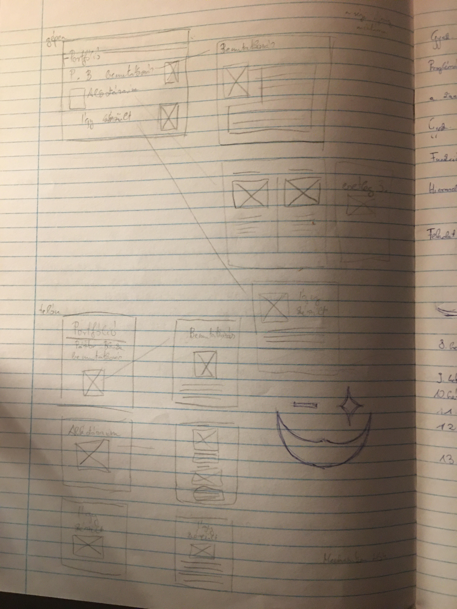
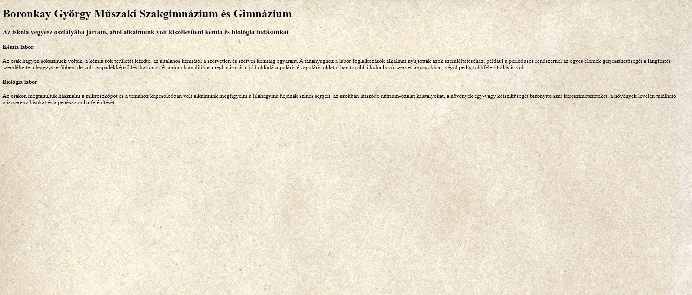
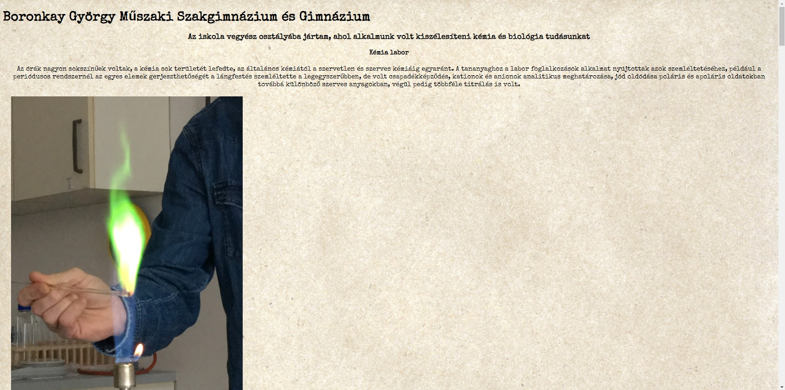
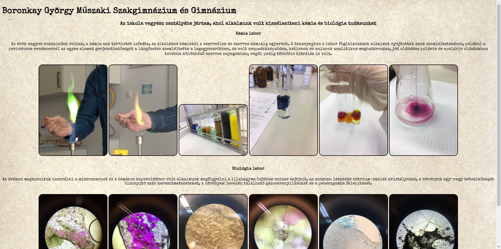

Az alapötletem az volt, hogy egy régi újság képére fogom megcsinálni a weboldalt, de ezzel az ötlettel igen hamar felhagyytam, mert a képességeim messze nem ott vannak, hogy ezt meg tudjam valósítani.
Ezek után igazából csak random csinálgattam valamit, aztán meghagytam ha tetszett, és módosítottam vagy kitöröltem ha nem.
  Aztán szépen lassan kialakult a végleges kinézet.